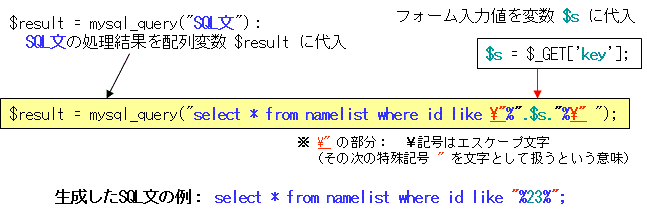

前提知識：オブジェクト指向プログラミング講義資料
<html>
<body>
<?php
$link = mysql_connect("MySQLサーバ名 ","ユーザ名 ","パスワード ");
mysql_close($link);
?>
</body>
</html>
sample_mknamelist.php ＜参考＞
<html> <body> <?php $link = mysql_connect("home.nda.ac.jp","ユーザ名","パスワード"); mysql_select_db("データベース名"); $result = mysql_query("create table namelist(id varchar(8), name varchar(32))select id, namefrom j4age"); mysql_close($link); ?> </body> </html>
※テーブル「namelist」は、実習で作成済み。
<html> <body> <?php $link = mysql_connect("home.nda.ac.jp","ユーザ名","パスワード"); mysql_select_db("データベース名"); $result = mysql_query("select * from namelist"); while ( $row = mysql_fetch_array($result) ){ echo $row["id"]; echo ","; echo $row["name"]; echo "\n"; } mysql_close($link); ?> </body> </html>
sample_select.php （表形式で出力させた場合）
<html> <body> <?php $link = mysql_connect("home.nda.ac.jp","ユーザ名","パスワード"); mysql_select_db("データベース名"); $result = mysql_query("select * from namelist "); echo "<table>\n"; echo "<tr>"; echo "<td> ID </td>"; echo "<td> NAME </td>"; echo "</tr>\n"; while ( $row = mysql_fetch_array($result) ){ echo "<tr>"; echo "<td>".$row["id"]."</td>"; echo "<td>".$row["name"]."</td>"; echo "</tr>\n"; } echo "</table>\n"; mysql_close($link); ?> </body> </html>
※SQL文を、"
sample_form.php （フォームの記述例）
<html>
<body>
<form action="sample_form_sub.php">
Input KEY {A,B,C}:
<input name="select " type="text" size="3">
<input name="button" type="submit" value="Query">
</form>
</body>
</html>
sample_form_sub.php
<?php $s = $_GET['select ']; if($s == "A"){ echo "-- A --\n"; }else if($s == "B"){ echo "-- B --\n"; }else if($s == "C"){ echo "-- C --\n"; }else{ echo "Error?\n"; } ?>
本講義では、各種フォームへの入力値を用いて SQL 文を生成し、MySQL データベースを操作する方法を示す。その基本的な処理の流れは、下図のようになる。
<html> <body> <form action="sample_mysql_where_sub.php"> Input KEY(id): <input name="key" type="text" size="10"> <input name="button" type="submit" value="Query"> </form> </body> </html>
sample_mysql_where_sub.php
<html> <body> <?php $link = mysql_connect("home.nda.ac.jp","ユーザ名","パスワード"); mysql_select_db("データベース名"); $s = $_GET['key']; $result = mysql_query("select * from namelist where id like '%".$s."%' "); echo "<table>"; echo "<tr>"; echo "<td> ID </td>"; echo "<td> NAME </td>"; echo "</tr>"; while ( $row = mysql_fetch_array($result) ){ echo "<tr>"; echo "<td>".$row["id"]."</td>"; echo "<td>".$row["name"]."</td>"; echo "</tr>"; } echo "</table>"; mysql_close($link); ?> </body> </html> SQL文の生成と情報取得※区切文字「\"」の代わりに「'」を使用可能
※サンプルコード提供（日本語非対応、一部のみ）：p12srcpack.tar.gz（解凍： tar xzvf p12srcpack.tar.gz）、ZIP版
[iwak@cmwww15 ~]$ mysql -h home.nda.ac.jp -p -u iwak Enter password: Welcome to the MySQL monitor. Commands end with ; or \g. Your MySQL connection id is 62481 Server version: 5.0.45 Source distribution Type 'help;' or '\h' for help. Type '\c' to clear the buffer.
mysql> show character set; +----------+-----------------------------+---------------------+--------+ | Charset | Description | Default collation | Maxlen | +----------+-----------------------------+---------------------+--------+ | big5 | Big5 Traditional Chinese | big5_chinese_ci | 2 | | dec8 | DEC West European | dec8_swedish_ci | 1 | | cp850 | DOS West European | cp850_general_ci | 1 | | hp8 | HP West European | hp8_english_ci | 1 | | koi8r | KOI8-R Relcom Russian | koi8r_general_ci | 1 | | latin1 | cp1252 West European | latin1_swedish_ci | 1 | | latin2 | ISO 8859-2 Central European | latin2_general_ci | 1 | | swe7 | 7bit Swedish | swe7_swedish_ci | 1 | | ascii | US ASCII | ascii_general_ci | 1 | | ujis | EUC-JP Japanese | ujis_japanese_ci | 3 | | sjis | Shift-JIS Japanese | sjis_japanese_ci | 2 | | hebrew | ISO 8859-8 Hebrew | hebrew_general_ci | 1 | | tis620 | TIS620 Thai | tis620_thai_ci | 1 | | euckr | EUC-KR Korean | euckr_korean_ci | 2 | | koi8u | KOI8-U Ukrainian | koi8u_general_ci | 1 | | gb2312 | GB2312 Simplified Chinese | gb2312_chinese_ci | 2 | | greek | ISO 8859-7 Greek | greek_general_ci | 1 | | cp1250 | Windows Central European | cp1250_general_ci | 1 | | gbk | GBK Simplified Chinese | gbk_chinese_ci | 2 | | latin5 | ISO 8859-9 Turkish | latin5_turkish_ci | 1 | | armscii8 | ARMSCII-8 Armenian | armscii8_general_ci | 1 | | utf8 | UTF-8 Unicode | utf8_general_ci | 3 | | ucs2 | UCS-2 Unicode | ucs2_general_ci | 2 | | cp866 | DOS Russian | cp866_general_ci | 1 | | keybcs2 | DOS Kamenicky Czech-Slovak | keybcs2_general_ci | 1 | | macce | Mac Central European | macce_general_ci | 1 | | macroman | Mac West European | macroman_general_ci | 1 | | cp852 | DOS Central European | cp852_general_ci | 1 | | latin7 | ISO 8859-13 Baltic | latin7_general_ci | 1 | | cp1251 | Windows Cyrillic | cp1251_general_ci | 1 | | cp1256 | Windows Arabic | cp1256_general_ci | 1 | | cp1257 | Windows Baltic | cp1257_general_ci | 1 | | binary | Binary pseudo charset | binary | 1 | | geostd8 | GEOSTD8 Georgian | geostd8_general_ci | 1 | | cp932 | SJIS for Windows Japanese | cp932_japanese_ci | 2 | | eucjpms | UJIS for Windows Japanese | eucjpms_japanese_ci | 3 | +----------+-----------------------------+---------------------+--------+ 36 rows in set (0.00 sec)
mysql> show global variables like 'character\_set\_%'; +--------------------------+--------+ | Variable_name | Value | +--------------------------+--------+ | character_set_client | utf8 | | character_set_connection | utf8 | | character_set_database | utf8 | | character_set_filesystem | binary | | character_set_results | utf8 | | character_set_server | utf8 | | character_set_system | utf8 | +--------------------------+--------+ 7 rows in set (0.00 sec)
mysql> show session variables like 'character\_set\_%'; +--------------------------+--------+ | Variable_name | Value | +--------------------------+--------+ | character_set_client | utf8 | | character_set_connection | utf8 | | character_set_database | utf8 | | character_set_filesystem | binary | | character_set_results | utf8 | | character_set_server | utf8 | | character_set_system | utf8 | +--------------------------+--------+ 7 rows in set (0.00 sec)
mysql> use iwak; Reading table information for completion of table and column names You can turn off this feature to get a quicker startup with -A Database changed
mysql> create table jlist(
-> id int auto_increment not null primary key,
-> name varchar(32) character set utf8 ,
-> info varchar(64) character set utf8
-> );
Query OK, 0 rows affected (0.01 sec)
※漢字コードUTF-8を用いた日本語ファイルの作成法が分からない場合、次項を参照
<html> <head><meta http-equiv="Content-Type" content="text/html;charset=UTF-8"> </head> <body> <form action="sample_mysqlinsertj_sub.php"> MySQL 追加<br> 氏名: <input name="name" type="text" size="20"> 備考: <input name="info" type="text" size="20"> <input name="button" type="submit" value="Query"> </form> </body> </html>
sample_mysqlinsertj_sub.php
<html> <head><meta http-equiv="Content-Type" content="text/html;charset=UTF-8"> </head> <body> <?php $link = mysql_connect("home.nda.ac.jp","ユーザ名","パスワード"); mysql_select_db("データベース名"); $s2 = @$_GET['name']; $s3 = @$_GET['info']; $qs = "insert into jlist set name='".$s2."', info='".$s3."'"; mysql_query($qs) or die("Error!\n"); print "OK!\n"; mysql_close($link); ?> </body> </html>
文字コードが UTF-8 でない日本語ファイルがすでにある場合（SJIS、JIS、EUCなどの文字コードで書かれているため文字化けする場合）、その文字コードを UTF-8 に変換することができます。ここでは、NKF(Nihongo Kanji Filter)というソフトウェアを用いる変換手順について示しておきます。
一時ファイルを利用する手順（原稿を残さない例）
nkf -w text.php > utf8.txt mv utf8.txt text.php （変換例１） [iwak@cmwww15 ~]$ nkf -w sample_mysqlinsertj.php > utf8.txt [iwak@cmwww15 ~]$ mv utf8.txt sample_mysqlinsertj.php （変換例２） [iwak@cmwww15 ~]$ nkf -w sample_mysqlinsertj_sub.php > utf8.txt [iwak@cmwww15 ~]$ mv utf8.txt sample_mysqlinsertj_sub.php
別ファイル（euctext.php）として作成し、変換する手順（原稿を残す例）
nkf -w euctext.php > utf8text.php
（ 参 考 ）
Emacsの日本語入力モードを UTF-8に変更する方法： 「 C-x、[Enter]、f 」の順にキー入力（操作）するとミニバッファ（エコー）領域で、「 Coding system for visited file (default, nil): 」と問い合わせてくるので、「 utf-8 」を入力する。モードライン上の文字コード記号（E,S,Jなど）が「 u 」になったことを確認する。この状態でファイルを保存すると、作成した日本語ファイルの文字コードは、「UTF-8」になる（操作を失敗した場合は、C-gで操作を取り消し、最初からやり直すこと！）。
そのほかにも、下の図のようにUTF-8（Unicode）をサポートした日本語エディタは数多くあるので、開発環境に応じて適切なものを使用すればよい。
<html> <head> <meta http-equiv="Content-Type" content="text/html;charset=UTF-8"> </head> <body> <form action="sample_mysqlsearchj_sub.php"> MySQL 検索<br> 番号: <input name="id" type="text" size="10"> 氏名: <input name="name" type="text" size="20"> 備考: <input name="info" type="text" size="20"> <input name="button" type="submit" value="Query"> </form> </body> </html>
sample_mysqlsearchj_sub.php
<html> <head> <meta http-equiv="Content-Type" content="text/html;charset=UTF-8"> </head> <body> <?php $link = mysql_connect("home.nda.ac.jp","ユーザ名","パスワード"); mysql_select_db("データベース名"); $s1 = @$_GET['id']; $s2 = @$_GET['name']; $s3 = @$_GET['info']; $ks = " id like '%".$s1."%' and name like '%".$s2."%' and info like '%".$s3."%' "; $result = mysql_query("select * from jlist where ".$ks); echo "<table>"; echo "<tr>"; echo "<td> 番号 </td>"; echo "<td> 氏名 </td>"; echo "<td> 備考 </td>"; echo "</tr>"; while ( $row = mysql_fetch_array($result) ){ echo "<tr>"; echo "<td>".$row["id"]."</td>"; echo "<td>".$row["name"]."</td>"; echo "<td>".$row["info"]."</td>"; echo "</tr>"; } echo "</table>"; mysql_close($link); ?> </body> </html>
<html> <head> <meta http-equiv="Content-Type" content="text/html;charset=UTF-8"> </head> <body> <form action="sample_mysqlupdatej_sub.php"> MySQL 更新<br> レコード指定<br> 番号: <input name="id" type="text" size="10"> <br> <br> 更新内容<br> 氏名: <input name="up_name" type="text" size="20"> 備考: <input name="up_info" type="text" size="20"> <input name="button" type="submit" value="Query"> </form> </body> </html>
sample_mysqlupdatej_sub.php
<html> <head> <meta http-equiv="Content-Type" content="text/html;charset=UTF-8"> </head> <body> <?php $link = mysql_connect("home.nda.ac.jp","ユーザ名","パスワード入"); mysql_select_db("データベース名"); $s1 = @$_GET['id']; $u1 = @$_GET['id']; $u2 = @$_GET['up_name']; $u3 = @$_GET['up_info']; $qs = "update jlist set id='".$u1."', name='".$u2."', info='".$u3."' where id='".$s1."'"; mysql_query($qs) or die("Error!\n"); print "OK!\n"; mysql_close($link); ?> </body> </html>
<html> <body> <form action="sample_mysqldelete_sub.php"> MySQL Delete<br> id : <input name="key_id" type="text" size="10"> name: <input name="key_name" type="text" size="20"> <input name="button" type="submit" value="Query"> </form> </body> </html>
sample_mysqldelete_sub.php
<html> <body> <?php $link = mysql_connect("home.nda.ac.jp","ユーザ名","パスワード"); mysql_select_db("データベース名"); $s1 = $_GET['key_id']; $s2 = $_GET['key_name']; $qs = "delete from namelist where id='".$s1."' and name='".$s2."'"; mysql_query($qs) or die("Error!\n"); print "OK!\n"; mysql_close($link); ?> </body> </html>
<html> <head> <meta http-equiv="Content-Type" content="text/html;charset=UTF-8"> </head> <body> <form action="sample_mysqldeletej_sub.php"> MySQL 削除<br> 番号: <input name="id" type="text" size="10"> 氏名: <input name="name" type="text" size="20"> 備考: <input name="info" type="text" size="20"> <input name="button" type="submit" value="Query"> </form> </body> </html>
sample_mysqldeletej_sub.php
<html> <head> <meta http-equiv="Content-Type" content="text/html;charset=UTF-8"> </head> <body> <?php $link = mysql_connect("home.nda.ac.jp","ユーザ名","パスワード"); mysql_select_db("データベース名"); $s1 = @$_GET['id']; $s2 = @$_GET['name']; $s3 = @$_GET['info']; $ks = " id like '%".$s1."%' and name like '%".$s2."%' and info like '%".$s3."%' "; $result = mysql_query("select * from jlist where ".$ks); echo "<table>"; echo "<tr>"; echo "<td> 番号 </td>"; echo "<td> 氏名 </td>"; echo "<td> 備考 </td>"; echo "</tr>"; while ( $row = mysql_fetch_array($result) ){ echo "<tr>"; echo "<td>".$row["id"]."</td>"; echo "<td>".$row["name"]."</td>"; echo "<td>".$row["info"]."</td>"; echo "</tr>"; } echo "</table>"; mysql_close($link); ?> <form action="sample_mysqldeleteja_sub.php"> 削除してもよいですか？ <input type="hidden" name="id" value="<?php echo $s1;?>"> <input type="hidden" name="name" value="<?php echo $s2;?>"> <input type="hidden" name="info" value="<?php echo $s3;?>"> <input name="button" type="submit" value="Query"> </form> </body> </html>
sample_mysqldeleteja_sub.php
<html> <body> <?php $link = mysql_connect("home.nda.ac.jp","ユーザ名","パスワード"); mysql_select_db("データベース名"); $s1 = @$_GET['id']; $s2 = @$_GET['name']; $s3 = @$_GET['info']; $ks = " id like '%".$s1."%' and name like '%".$s2."%' and info like '%".$s3."%' "; $qs = "delete from jlist where ".$ks; mysql_query($qs) or die("Error!\n"); print "OK!\n"; mysql_close($link); ?> </body> </html>
<html> <head> <meta http-equiv="Content-Type" content="text/html;charset=UTF-8"> </head> <body> <a href="./sample_mysqlsearchj.php"> [検索] </a> <a href="./sample_mysqlinsertj.php"> [追加] </a> <a href="./sample_mysqlupdatej.php"> [更新] </a> <a href="./sample_mysqldeletej.php"> [削除] </a> <br> <br> <?php $link = mysql_connect("home.nda.ac.jp","ユーザ名","パスワード"); mysql_select_db("データベース名"); $result = mysql_query("select * from jlist"); echo "<table>"; echo "<tr>"; echo "<td> 番号 </td>"; echo "<td> 氏名 </td>"; echo "<td> 備考 </td>"; echo "</tr>"; while ( $row = mysql_fetch_array($result) ){ echo "<tr>"; echo "<td>".$row["id"]."</td>"; echo "<td>".$row["name"]."</td>"; echo "<td>".$row["info"]."</td>"; echo "</tr>"; } echo "</table>"; mysql_close($link); ?> </body> </html>
<html> <head> <meta http-equiv="Content-Type" content="text/html;charset=UTF-8"> </head> <body> <form action="./sample_forms.php"> 単一行テキスト <input type="text" name="key1" size="20" value="短い文字列"> <br><br> 非表示テキスト <input type="password" name="pass" size="20" value="非表示入力"> （入力内容を隠す） <br><br> 複数行テキスト（自動改行なし）<br> <textarea name="key2" rows="3" cols="40">長い文字列</textarea> <br><br> ラジオボタン <input type="radio" name="key3" value="1" > 候補１ <input type="radio" name="key3" value="2" > 候補２ <input type="radio" name="key3" value="3" checked> 候補３ <input type="radio" name="key3" value="4" > 候補４ <br><br> チェックボックス<!-- $chk=$_REQUEST["key4"]; 値が配列$chkに格納される --> <input type="checkbox" name="key4[]" value="1" checked> 候補１ <input type="checkbox" name="key4[]" value="2" > 候補２ <input type="checkbox" name="key4[]" value="3" > 候補３ <input type="checkbox" name="key4[]" value="4" checked> 候補４ <br><br> プルダウンメニュー <select name="key5"> <option value="1" > 候補１ <option value="2" > 候補２ <option value="3" selected> 候補３ <option value="4" > 候補４ <option value="5" > 候補５ </select> <br><br> リストボックス <select name="key6" size="3"> <option value="1" > 候補１ <option value="2" > 候補２ <option value="3" selected> 候補３ <option value="4" > 候補４ <option value="5" > 候補５ </select> <br><br> 隠れフィールド値（特定の値をサブプログラムに渡す） <input type="hidden" name="key7" value="非表示の値"> <br><br> リセットボタン <input type="reset" value="初期化"> <br><br> 送信ボタン <input type="submit" value="実行"> </form> </body> </html>
sample_forms.php
<html> <head> <meta http-equiv="Content-Type" content="text/html;charset=UTF-8"> </head> <body> <?php $key1 = @$_GET['key1']; $pass = @$_GET['pass']; $key2 = @$_GET['key2']; $key3 = @$_GET['key3']; $key4 = @$_GET['key4']; $key5 = @$_GET['key5']; $key6 = @$_GET['key6']; $key7 = @$_GET['key7']; // 「ヒアドキュメント」 print <<<EOD key1 = $key1<br> pass = $pass<br> key2 = $key2<br> key3 = $key3<br> EOD; echo "key4 = "; if(is_array($key4))foreach($key4 as $idx){ echo $idx.","; } echo "<br>\n"; // 「ヒアドキュメント」 print <<<EOD key5 = $key5<br> key6 = $key6<br> key7 = $key7<br> EOD; ?> </body> </html>※is_array(変数名)は、配列変数かどうかチェックする関数
<html> <body> <?php $link = mysql_connect("home.nda.ac.jp","ユーザ名","パスワード"); mysql_select_db("データベース名"); $result = mysql_query("select * from namelist"); echo "<form action='sample_select_list_sub.php'>\n"; echo "<select name='list' size=5>\n"; while ( $row = mysql_fetch_array($result) ){ echo "<option value='".$row["id"]."' >".$row["name"]."\n"; } echo "</select><br><br>\n"; echo "<input type='submit' value='query'>"; echo "</form>\n"; mysql_close($link); ?> </body> </html>
sample_select_list_sub.php
<html> <body> <?php $list = @$_GET['list']; print <<<EOD list = $list<br> EOD; ?> </body> </html>
<html> <body> <?php $link = mysql_connect("home.nda.ac.jp","ユーザ名","パスワード"); mysql_select_db("データベース名"); $result = mysql_query("select * from namelist"); echo "<form action='sample_select_check_sub.php'>\n"; while ( $row = mysql_fetch_array($result) ){ echo "<input type='checkbox' name='list[]' "; echo "value='".$row["id"]."'>".$row["name"]."<br>\n"; } echo "<input type='reset' value='reset'>"; echo "<input type='submit' value='query'><br>"; echo "</form>\n"; mysql_close($link); ?> </body> </html>
sample_select_check_sub.php
<html>
<body>
<?php
echo "Check!<br>\n";
$list = @$_GET['list'];
if(is_array($list))foreach($list as $str){
echo $str."<br>\n";
}
?>
</body>
</html>
フォームに入力された値をCGI(Common Gateway Interface)を通じてサーバに渡す仕組みに、GETとPOSTの二つの方法があります。それぞれ、GETメソッド、POSTメソッドと呼ばれています。GETメソッドでは、要求するページデータのURL部分に追記する形でサーバに値を渡します（URLの末尾に「?」、各変数値を「&」で区切りながら列挙）。POSTメソッドでは、符号化した値をURLに続いて送信される本文データとしてサーバに渡します。
本講義では、データのやり取りをわかりやすくするために、GETメソッドのみを用いてます（特に、method を指定しない場合、標準的な GETメソッドが採用）。GETメソッドは、引数付きのURLを記述したい場合に便利ですが、当然、伝送する値が読める形でブラウザなどに表示されます。
<html> <body> <form action="sample_func_abs_get.php"> A= <input type="text" name="r"> <input type="submit" value="Query"> <br> <?php $r = @$_GET['r']; // @：エラー抑制演算子 print "A=".$r.",Abs(A)=".abs($r); ?> </form> </body> </html>
人目につきにくいという程度の対策ですが、もしパスワードなどの値を渡したい場合には、POSTメソッドを用いることが望ましいです。ただし、POSTメソッドを用いたとしても、本文部分は簡単に復号できるので万全ではないことに注意が必要です。暗号などを用いた高度なセキュリティ技術の実装法については、本講義で触れませんが、興味を持った学生は調べてみてください。
sample_func_abs_post.php （POSTメソッドを用いたフォームの記述例）
<html> <body> <form method="post" action="sample_func_abs_post.php"> A= <input type="text" name="r">
<input type="submit" value="Query"> <br> <?php $r = @$_POST['r']; // @：エラー抑制演算子 print "A=".$r.",Abs(A)=".abs($r); ?> </form> </body> </html>
ステータスコード（Hypertext Transfer Protocol -- HTTP/1.1）は、閲覧用ソフトウェア（ブラウザ）に自動処理させるための３桁の符号です。例えば、閲覧ページを自動転送（HTTP リダイレクト）させたい場合は、次のように記述するだけで、ブラウザが自動的にダウンロードページを変更します。この例では、日本語版メニューページを強制的に閲覧させています（バックボタンで復帰）。
<?php header('HTTP/1.1 303 See Other'); header('Location: ./sample_mysqlmenu.php'); exit(); ?>